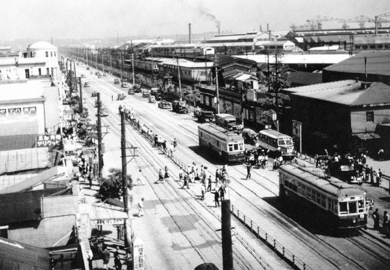
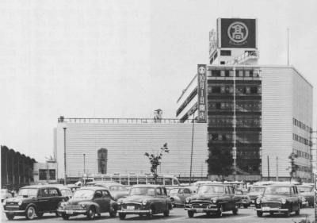
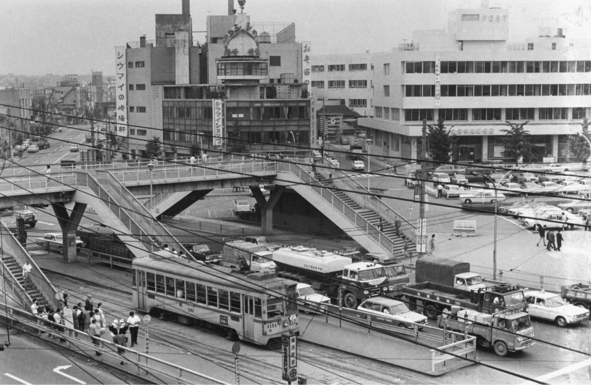
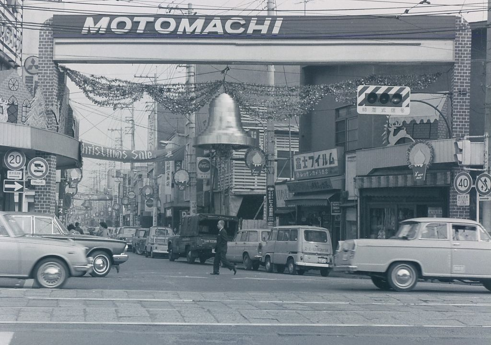
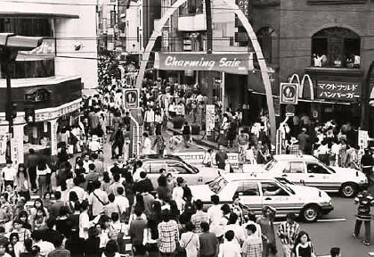
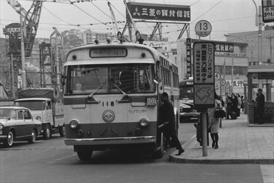
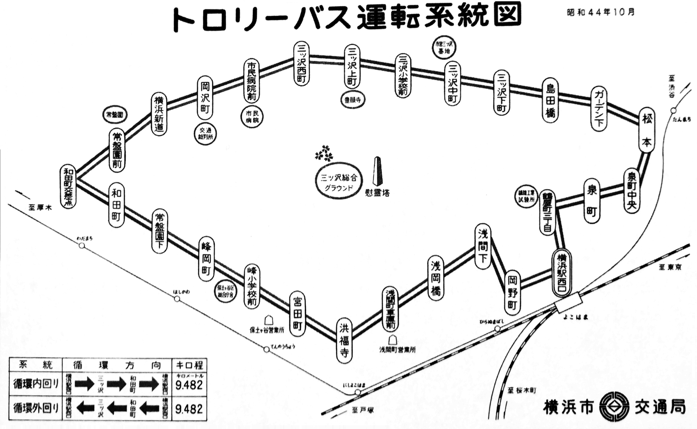
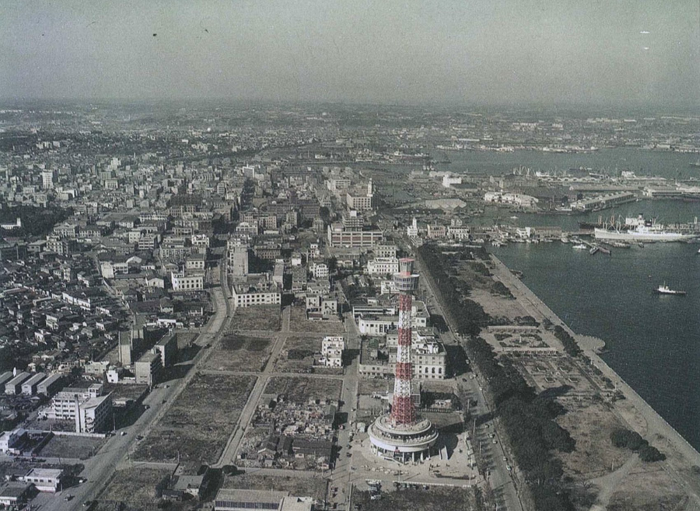
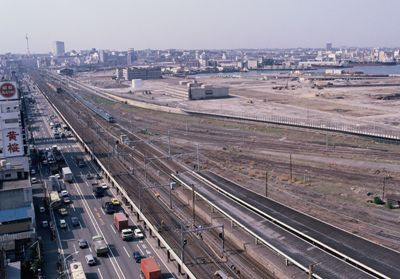

ホーム
デザイン演習Ⅰ・Ⅱ
デザイン演習 インタビュー準備
Q1.いつ頃から横浜に住んでいますか？
Q2.20才ぐらいの時に横浜で一番印象に残っていることは何ですか？
Q3.学生の時によく通ったお店や場所があれば教えてください。
Q4.1970年代の横浜は今と比べて雰囲気の違いはありますか？
Q5.通われていた学校はどこにありましたか？（場所）
Q6.子育てで大変だったことは何ですか？
Q7.学生時代流行ったもの（服や遊び・歌など）を教えてください。
Q8.昭和の横浜が現在の横浜よりも優れている点を教えてください。
Q9.現在も横浜に住み続けている理由は何ですか？
Q10.横浜市西区の良いところを教えてください。

昭和30年代の桜木町駅付近

昭和34年横浜高島屋オープン

昭和37年頃 横浜駅

1970年頃の横浜駅東口の市電と崎陽軒

昭和40年頃元町商店街入り口

昭和50年頃チャーミングセールで混雑する元町ショッピングストリート入り口

昭和41年頃のトロリーバス乗り場

昭和44年トロリーバス運転系統図

昭和36年開業後のマリンタワー周辺

昭和58年頃のみなとみらい埋め立て